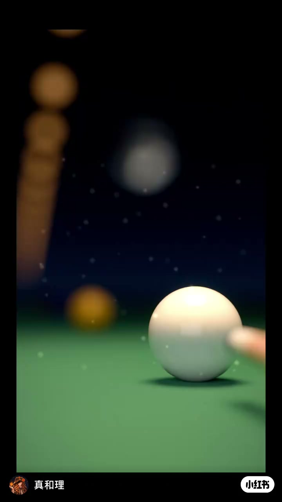
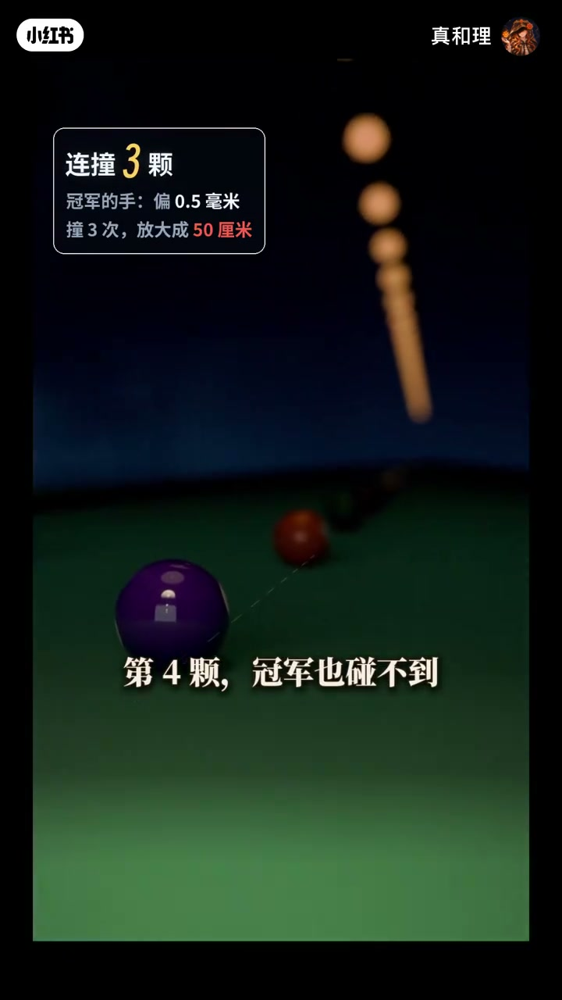
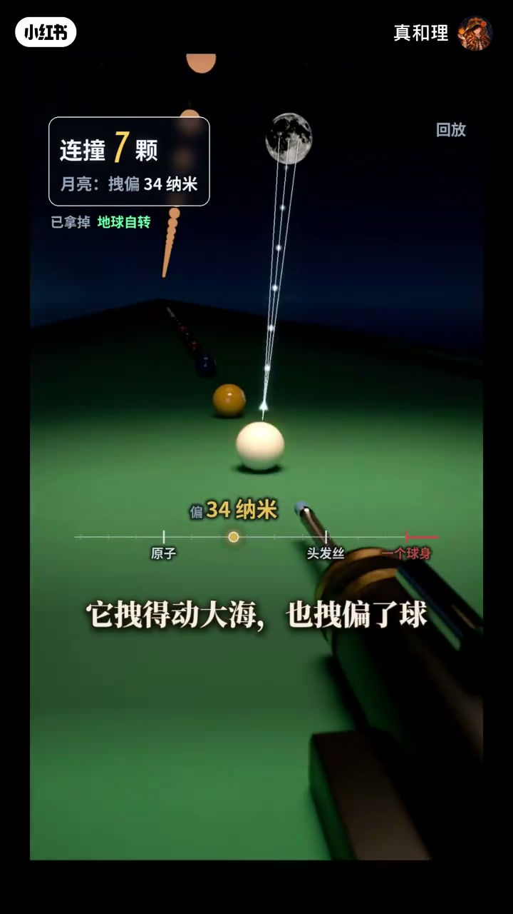
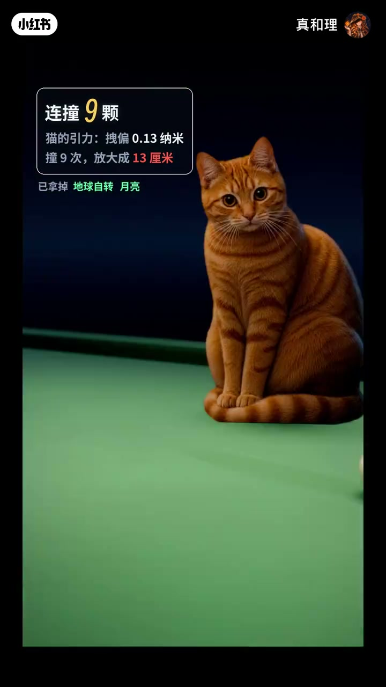
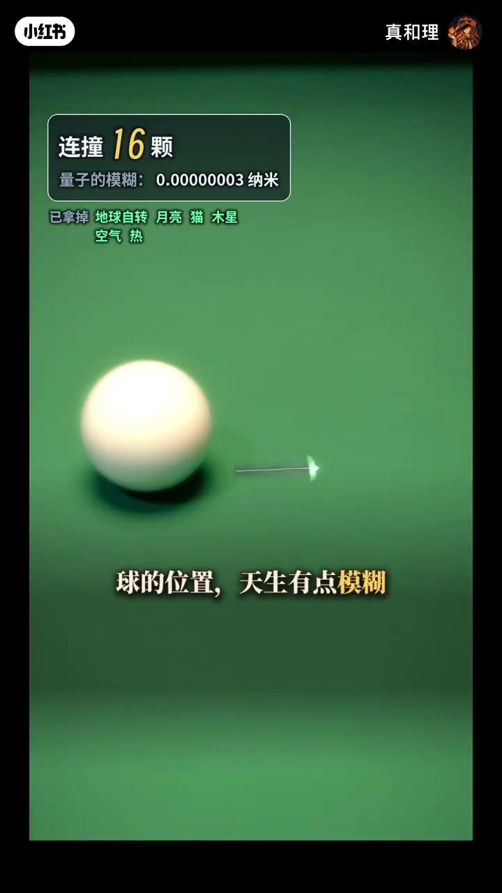
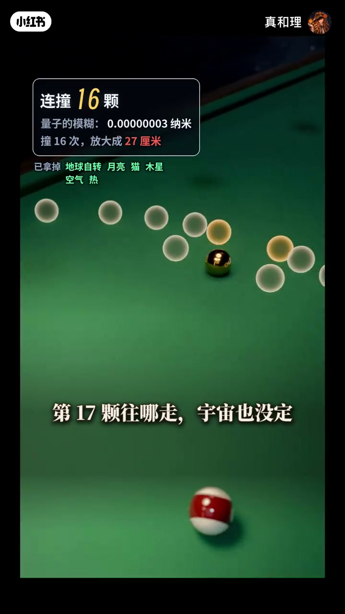

内容要点
一个理想化台球问题：无限长球桌、每两颗球之间空十个球身，一杆最多连撞几颗？答案不在手稳，而在误差每撞一次放大 10 倍。
知识结构
一张无限长的球桌，球一颗接一颗摆下去，每两颗之间空十个球身——一杆最多能连着撞到第几颗？
出杆只偏半毫米，被撞球方向就歪；滚过十个球身到下一颗已偏 5 毫米，每撞一次偏差放大 10 倍。
偏差超过一个球身就断链，所以每想多撞一颗，都得把出杆精度再提高 10 倍。
出杆只偏半毫米，撞过一颗就偏 5 毫米，每撞一次偏差放大 10 倍；偏差超过一个球身就碰不到下一颗。所以每想多撞一颗，就得再准 10 倍。
00:00–00:34问题设定：无限长球桌与一杆连撞
这是一道理想化的物理趣味题：假如球桌无限长，球一颗接一颗摆下去，每两颗之间空着十个球身的距离。一杆下去，球撞球、球再撞球，最多能连着撞到第几颗？作者先给了一个反直觉的提示：答案和手稳不稳关系不大。


00:35–01:09关键：每次碰撞误差放大 10 倍
先看一次碰撞：出杆只偏半毫米，被撞的球方向就歪了一点。它再滚过十个球身的距离，到下一颗跟前时已经偏了 5 毫米。每撞一次，偏差放大 10 倍；一旦偏差超过一个球身，下一颗就碰不到了。这就是为什么「手稳不稳关系不大」——误差是指数级累积的，不是靠手感能压住的。


01:10–01:34结论：每多撞一颗，就得再准 10 倍
偏差超过一个球身，链条就断。所以每想多撞一颗，出杆就得再准 10 倍。结尾「世界冠军」的画面大字点出：即便是顶尖选手，在这个指数放大的模型里也撞不了几颗。


口述/画面要点（8段）
结合 Whisper medium 转录与画面大字整理；专有名词与同音错字已按语境校正，个别口误以原视频为准。
假如有一张无限长的球桌，球一颗接一颗摆下去，每两颗之间空着十个球身。
一杆下去，球撞球、球再撞球——最多能连着撞到第几颗？
答案和手稳不稳关系不大。
先看一次碰撞：出杆只偏半毫米，被撞的球方向就歪了一点。
它再滚过十个球身，到下一颗跟前，已经偏了 5 毫米。
每撞一次，偏差放大 10 倍。偏差超过一个球身，下一颗就碰不到了。
所以每想多撞一颗，就得再准 10 倍。
世界冠军。